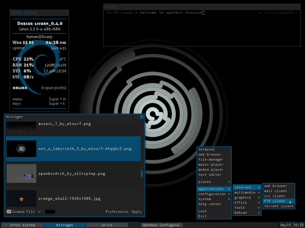

lang fr|gb

openbox session
Openbox is a ultra configurable and light window manager for X. he uses xml as format for its configuration files. Openbox is a window manager, not a desktop environment. Openbox is only responsible for maintaining the windows you open on your screen -- nothing else. That means installing Openbox won't give you easy menu access to wallpaper options, a taskbar or system panel, or most of those other doo-dads. It does, however, give you a framework to incorporate other programs that do those things -- and usually with a greater degree of freedom over the style and interface.
that's i've done on livarp with tint2 as default panel, fbpanel as alternative menu and conky in normal-window mode.
screenshot
{kind=link}
startup
openbox from the session-selector script and calls ~/.config/openbox/autostart file.
to change our apps on startup, simply edit this file:
components
openbox session has several components:
- conky: is diplayed on the left side of your screen in normal-window mode, that mean that you can close or minimize it. configurable from its ~/.conky/conkyrc_openbox or from the openbox menu: section config:conky
- livarp menu: available from top-left corner and handled by fbpanel. it includes a complete menu of installed applications, configuration section and a systray (configurable from ~/.config/fbpanel/default or from the menu itself).
- tint2: the default panel of this session, configurable from its ~/.config/tint2/tint2rc, from openbox menu:section config:tint2, or from livarp menu:section wms:openbox:tint2.
configuration
conky, edit its conkyrc:
fbpanel, edit its main configuration file:
if you want to add plugins, visit the dedicated page.
configuring openbox from obconf and obmenu in graphic mode
available from the openbox menu:section config:openbox:obconf/obmenu:
- obconf has several tabs that define all parts of the openbox configuration. you can define windows decorations, openbox and menu theme, desktop margins and the font to use.
openbox themes can be installed/created in ".obt" format from obconf. - obmenu is a gui editor for the openbox menu.
configuring openbox from its rc.xml
full openbox configuration stands in one file: ~/.config/openbox/rc.xml.
each section describe a part of openbox. here is a little list of rc.xml sections:
- resistance : strength: Tells Openbox how much resistance (in pixels) there is between two windows before it lets them overlap.
screen_edge_strength: Basically the same as strength but between window and the screen edge. - focus : focusNew: Openbox will automatically give focus to new windows when they are created, otherwise the focus will stay as it is.
followMouse: Makes focus follow mouse. e.g. when the mouse is being moved the focus will be given to window under the mouse cursor.
focusLast: When switching desktops, focus the last focused window on that desktop again, regardless of where the mouse is. Only applies followMouse is set.
focusDelay: The time (in milliseconds) Openbox will wait before giving focus to the window under mouse cursor. Only applies if followMouse is set.
underMouse: Focus windows under the mouse not only when the mouse moves, but also when it enters another window due to other reasons (e.g. the window the mouse was in moved/closed/iconified etc). Only applies if followMouse is set.
raiseOnFocus: Also raises windows to top when they are focused. Only applies if followMouse is set. - placement : policy can be either Smart or UnderMouse.
Smart will cause new windows to be placed automatically by Openbox.
UnderMouse makes new windows to be placed under the mouse cursor. - theme : name: The name of the Openbox theme to use.
titleLayout tells in which order and what buttons should be in a window's titlebar. The following letters can be used, each only once: N :window icon, L :window label (aka. title), I: iconify, M: maximize, C: close, S: shade (roll up/down), D: omnipresent (on all desktops).
keepBorder tells if windows should keep the border drawn by Openbox when window decorations are turned off.
animateIconify adds a little iconification animation if enabled. font Specifies the font to use for a specific element of the window. Place can be either of: ActiveWindow: Title bar of the active window, InactiveWindow: Title bar of the inactive window, MenuHeader: Titles in the menu, MenuItem: Items in the menu, OnScreenDisplay: Text in popups such as window cycling or desktop switching popups.
Childnodes for each place are name, specifying the font to use (defaults to sans, an alias for all sans serif fonts), size in px, weight, either normal or bold and slant, either italic or normal. - desktops : number: The number of virtual desktops to use.
firstdesk: The number of the desktop to use when first started.
popupTime Time (in milliseconds) to show the popup when switching desktops. Can be set to 0 to disable the popup completely.
names Each name tag names your desktops, in ascending order. Unnamed desktops will be named automatically depending on the locale. You can name more desktops than specified in number if you want. - resize : drawContents: Resize the program inside the window while resizing. When disabled the unused space will be filled with a uniform color during a resize.
popupShow: When to show the move/resize popup. Always always shows it, Never never shows it, Nonpixel shows it only when resizing windows that have specified they are resized in increments larger than one pixel, usually terminals.
popupPosition: Where to show the popup.
Top: shows the popup above the titlebar of the window.
Center: shows it centered on the window.
Fixed shows it in a fixed location on the screen specified by popupFixedPosition.
popupFixedPosition: Specifies where on the screen to show the position when Fixed. Both x and y take coordinates - margins : Each tag specifies the amount of pixels to reserve at the respective edge of the screen. New windows will not be placed in those areas, and maximized windows will not cover them.
- dock : The dock is only shown when one or more dockapps are running.
position: Specify where to show the dock. Can be one of TopLeft, Top, TopRight, Right, BottomRight, Bottom, BottomLeft, Left and Floating.
stacking: Which window layer to put the dock in. Can be one of above, normal, below. The dock can be raised and lowered by left and middle clicking on it, among windows in the specified layer.
direction: Specify if dockapps should be laid out in a Vertical or Horizontal direction.
floatingX and floatingY When position is set to Floating, these specify the pixel position of the dock. Cannot currently use the slightly extended format described at the bottom of this page.
autoHide: Whether to hide the dock automatically when the mouse is not over it.
hideDelay and showDelay specify (in milleseconds) the delays for hiding and showing the dock when the mouse leaves and enters it, respectively.
moveButton Specifies which button to use for moving individual dockapps around in the dock, see the bindings page for details.
noStrut: Specifies that the dock should not set a strut, which means it won't stop windows from being placed or maximized over it. When position is set to Floating, this is always on, since openbox doesn't guess which edge it should belong to based on just the position. You can use margins to emulate that if you want. - keyboard & mouse : see openbox keybinds on bottom of this page
- menu : configure how the menu ~.config/openbox/menu.xml act in openbox - more details on the menu section of this doc.
- applications : allow you to define rules on specific applications identified from xprop properties. the rc.xml file has some examples to let you start rules config.
keys/mousebinds
keybinds and mousebinds are defined in the openbox rc.xml. here are the default keybinds on livarp_0.4 openbox session:
menus:
- menu livarp: top-left corner of the screen
- menu openbox: right-click on desktop or Super+m
- dmenu: Super+p
control:
- quit openbox: Super+Shift+q, or from openbox menu:exit or livarp menu:exit
windows:
- close client: Alt+F4
- previous/next client: Alt+Tab
- toggle maximize client: double-click on titlebar
- resize le client: Alt+right-click
- send client to screen corners: Super+y/u/b/n
navigation:
- previous/next screen: Ctrl+Alt+Left/Right
- desktop 'x': Super+Fx
launchers:
- open default: Ctrl+Enter
- open ranger: Super+r
- open rox-filer: Super+Shift+r
- open firefox: Super+w
- open geany: Super+e
- music player: Super+z
- volume control: Super+v
- display conky: Super+c
- display keybinds: Super+k